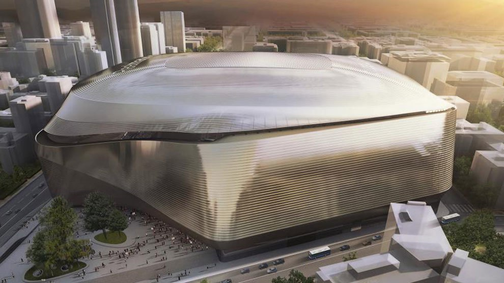
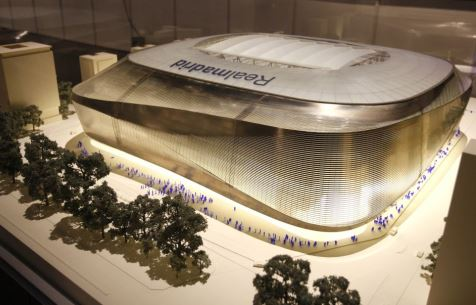
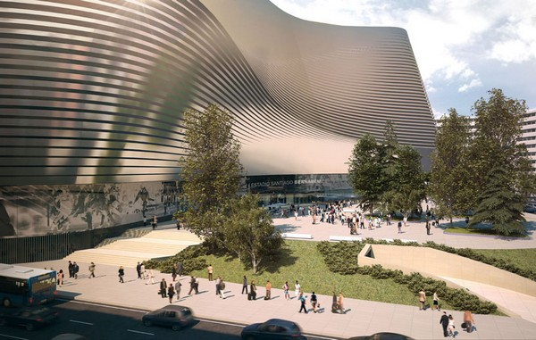
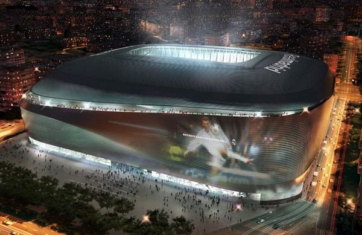

Реконструкции «Сантьяго Бернабеу» дан зелёный свет

Комиссия по Городскому Развитию при Муниципалитете Мадрида 24 мая приняла окончательное решение относительно перестройки «Сантьяго Бернабеу». Теперь это решение должно быть 30 мая ратифицировано Муниципальным пленумом, и тогда процесс модернизации стадиона мадридского «Реала» можно будет начать уже осенью. Данное решение поддержали представители партий «Мадрид сейчас» («Ahora Madrid»), «Народная Партия» («Partido popular») и «Горожане» («Ciudadanos»). При этом депутаты от «Испанской Социалистической Рабочий Партии»(«PSOE») воздержались.

Первый этап работ, запланированных на «Сантьяго Бернабеу», предполагает перенос офисов в спортивный городок Вальдебебас, что позволит освободить 8000 квадратных метров территории. Кроме того, некоторые изменения также произойдут внутри самого стадиона: так, персональные ложи, благодаря своему новому дизайну, станут частью трибуны. Также будут улучшены некоторые архитектурные аспекты, а территория между проспектом Кастельяна и западным фасадом стадиона, где сейчас находится автостоянка, превратится в пешеходную зону.

После одобрения идеи перестройки стадиона «Реал Мадрид» сможет представить проекты по благоустройству городской территории, прилегающей к стадиону, и непосредственно планы по модернизации «Сантьяго Бернабеу». Специальный План подразумевает, что работы будут выполнены в течение 39 месяцев. И, хотя руководство Королевского клуба планирует их начать уже в начале осени 2017 года, основные работы запланированы на летние периоды 2018 и 2019 годов.
